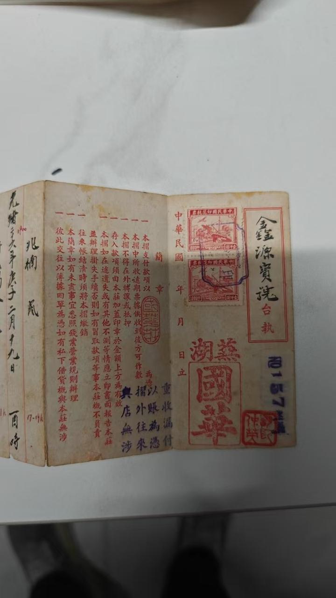
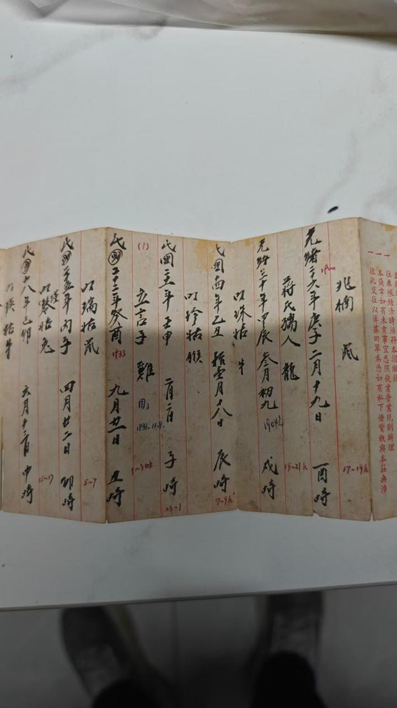
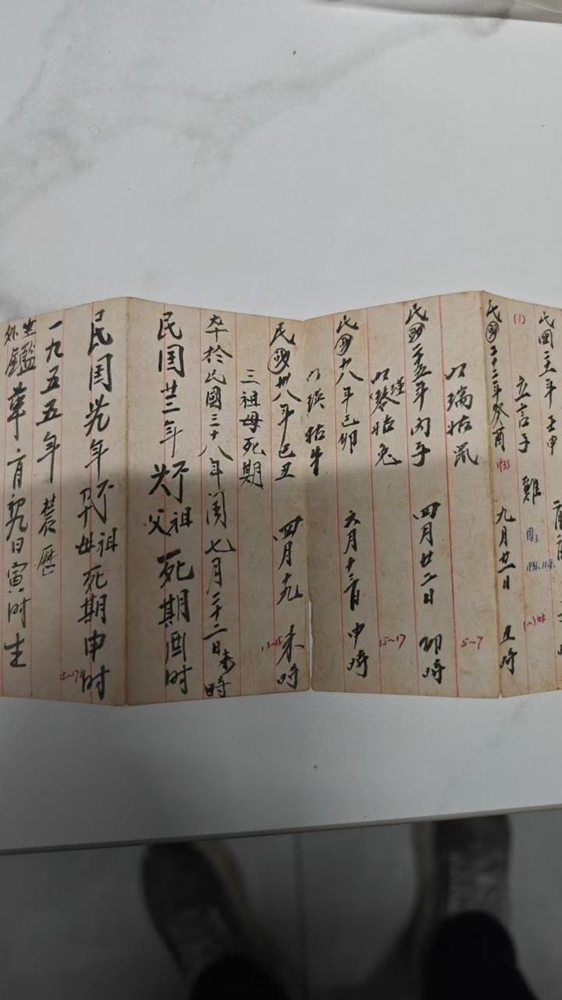
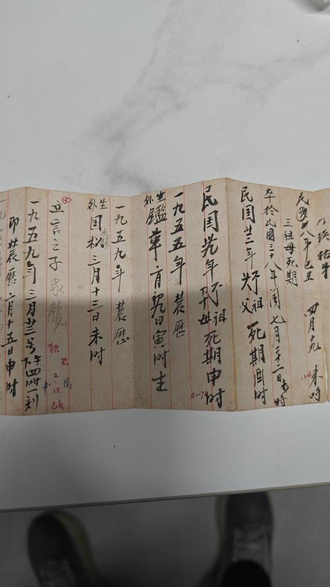
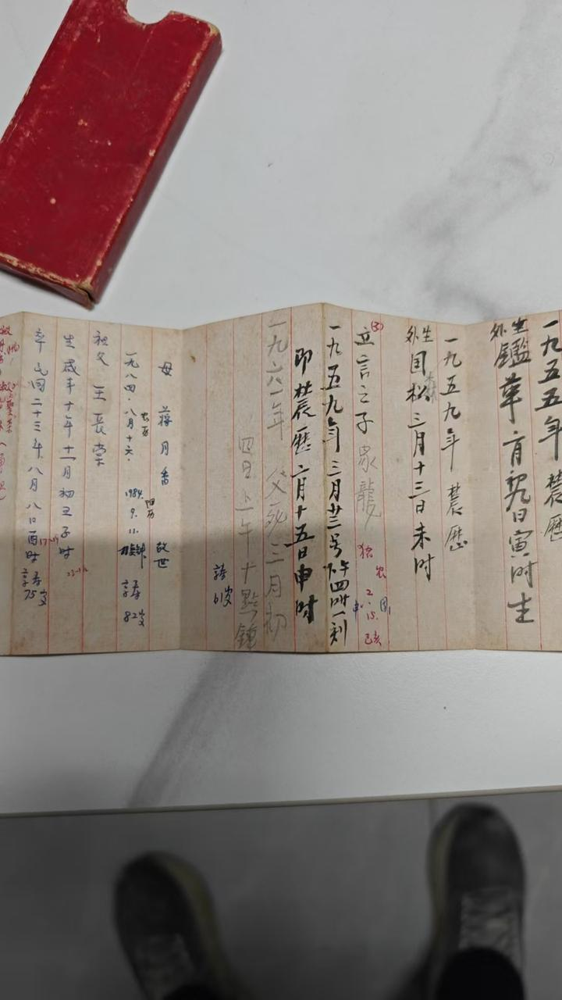
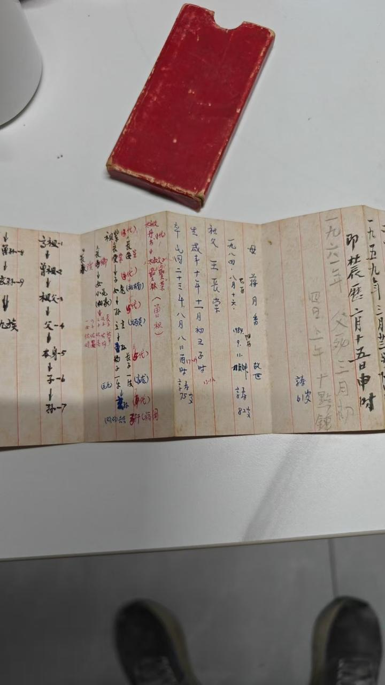
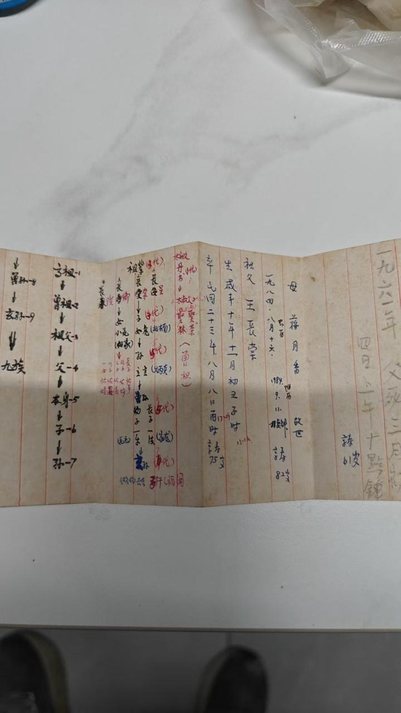
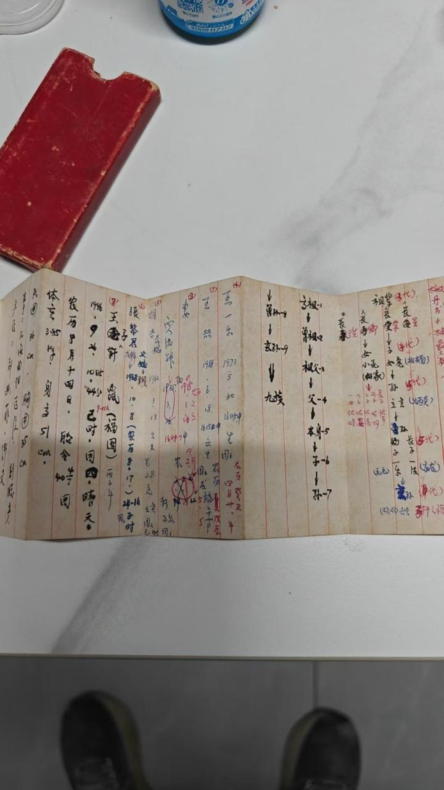
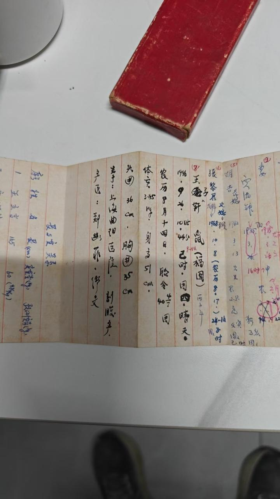

Wang Family Ancestry Report
1. Executive summary
Core finding
王一波's paternal line descends from Manchu Banner cohort, most likely from the Hangzhou garrison community that dispersed after the 1914 demolition, with the family relocating to the Shaoxing area and actively suppressing Manchu identity through the Republican (1911-1949) and PRC (1949-present) eras. The autosomal NE component is ~38% Amur — extreme outlier (<1%) in Wu region context. Maternal line traces back to two deep Wu Han 世家 with formal 族谱: 南源贾氏 (Luoyang → Shangyu since 1180 CE) and 东山谢氏 (Taikang → Shangyu since 286 CE, "王谢风流" lineage including 谢安).
One-paragraph version
Dad is roughly 1/2 Manchu Banner descent (one fully Banner-cohort parent, one Wu Han parent). Grandpa 王立言 was essentially full Banner-descent (~55% Amur). Zhe is 1/4 Manchu Banner descent via dad, mixed with deep Wu Han from both mom and maternal grandmother 贾湘钟 (Shangyu 世家). The family's Banner identity was deliberately suppressed across the Republican and PRC political eras and survives today only as a genetic signature, an asymmetric record pattern, and the lived family name 敦龙 (used in place of 王一波 by family elders to this day).
Three independent evidence categories converge on the same answer
- Genetic (very high confidence): qpAdm + G25 + 23mofang + American platforms — four independent analytical frameworks with different reference panels all show NE Asian / Tungusic elevation in dad far above the Wu Han baseline.
- Documentary (moderate confidence): family register kept by a 命师 (fortune teller) with hour-precise birth/death dates but no names, no 籍贯 above 王长荣 — opposite of the maternal side's deep 族谱 records.
- Cultural / behavioral (moderate-high confidence): 敦龙 as actively-used family name into 2026 (propagated through marriage into 贾 family network); polygamy of 王长荣's father (≥3 wives = Banner-officer signature).
2. The evidence stack
Seventeen+ independent evidence streams across six analytical frameworks all point in the same direction. Each row below is independent of the others, both in data source and in analytical method.
| Evidence | Framework | What it shows |
|---|---|---|
| qpAdm Amur_N | AADR ancient DNA | 38% Amur in dad |
| qpAdm PrimorskyAmurRiver_N | AADR ancient DNA | 39% (independent ancient source) |
| qpAdm Amur_Mesolithic | AADR ancient DNA | 33% |
| qpAdm Daur (modern) | AADR modern | 32% |
| qpAdm Hezhen (modern) | AADR modern | 31% |
| G25 nearest neighbor | Eurogenes PCA | Liaoning Manchu, not any Han |
| 23mofang A/B cousin split | Chinese commercial autosomal IBD | 33% NE-shifted + 37% pure Wu Han = impossible from uniform admixture |
| 78cM 余姚 潘 cousin (16% Korean) | 23mofang IBD | Banner-era TMRCA ~4 generations back |
| Beijing 于 cousins (Buryat + Euro mix) | 23mofang IBD | Deep Tungusic ancestor at 18cM matches |
| 黑龙江 matches (金, 傅 surnames) | 23mofang IBD | Manchu Hanification surnames + TMRCA 150-300ya = Banner-era |
| American platforms 5-10% Korean (dad) | 23andMe etc. | NE signal above Han baseline; "Korean" = platform proxy for missing Manchu reference |
| American platforms 2-5% Korean (zhe) | 23andMe etc. | Father-son 2:1 halving = one-generation dilution signature |
| Y-Hg N-Y137601 | YFull terminal SNP | Tungusic Y haplogroup |
| Y-Hg geographic distribution | 23mofang Y database | Non-monotonic 江苏 dip, 上海 super-spike → point-source Banner dispersal, NOT gradient migration |
| Family record asymmetry | 命师 register direct exam | No 籍贯 paternal vs deep 籍贯 maternal (贾 1180 CE, 谢 286 CE) |
| 1914 灯祖父 death entry | 命师 register | Same year as Hangzhou garrison demolition |
| Polygamy ≥3 wives (王长荣's father) | 命师 register | Banner-officer signature, DNA-independent |
| 敦龙 family-use name asymmetry | Cultural practice | Maintained by elders to 2026; absent from maternal side — Banner-style identity preservation |
| 南里蒋墺王氏 ruled out | 字辈 mismatch | Removes "Wu Han 王 lineage with lost 族谱" alternative |
3. Dad (王一波) — paternal Banner descent
3a. Autosomal: 38% Amur from five independent sources
The most rigorous test is qpAdm against ancient DNA samples. Dad's profile fits as 62% Yangshao (Han-ancestral) + 38% Amur_N (Tungusic-ancestral). This holds across five different "Amur" reference sources:
| Reference source | n | Best fit % Amur for dad |
|---|---|---|
| Amur_N (ancient, ~5000ya) | 14 | 38% |
| Primorsky Amur_N (ancient) | 6 | 39% |
| Amur Mesolithic (ancient) | 5 | 33% |
| Daur (modern Mongolic-Tungusic) | 10 | 32% |
| Hezhen (modern Tungusic) | 19 | 31% |
Median ≈ 32%, range 31-39%. This convergence across multiple independent sources rules out artifact. Dad's NE ancestry is specifically Amur-cluster, not generic NE Asian.
3b. Geographic context — 38% Amur in Wu region is extreme outlier
Han Chinese have a regional Amur-baseline gradient driven by 2000 years of historical NE absorption:
- N. Han (Beijing, Hebei, Shandong, Liaoning): ~22-28% Amur baseline
- National Han average: ~20-22%
- Wu Han (Zhejiang, Jiangsu, Shanghai): ~10-15% — dad lives here
- S. Han (Guangdong, Fujian): ~5-10%
Dad's 38% Amur in the Wu Han context is +23pp above local baseline. In Wu region, this places him in the <1% extreme tail. A non-Banner explanation would require either generic NE Han migration (which doesn't produce this geographic anomaly) or recent specific admixture from an NE Asian source — i.e., Banner descent.
3c. Family genealogical record — direct examination
The王 family preserves a handwritten register on a 1940s pre-printed booklet ("金鑫源宝号台执" — 金鑫源 is the printer's brand, not the family). Critically, this is a 命师 (fortune teller's) working notes, not a self-kept 宗谱. The "朱湖国华" red seal identifies the writer as 朱国华 from 朱湖山村, 嵊州黄泽镇 (adjacent to 上虞). The precise 时辰 (hour-of-day) entries are exactly what a 命师 needs for 八字 readings.









Page-by-page date index
| Page | Era date | Gregorian | Label / event |
|---|---|---|---|
| 8 | 光绪癸未 二月十九 酉时 | 1883 | Anonymous ancestor death |
| 8 | 光绪辛卯 十月初九 戌时 | 1891 | Anonymous death (marginal "1904") |
| 8 | 民国乙丑 四月廿二 卯时 | ~1925 | Death (属兔) |
| 8 | 民国丙寅 五月 辰时 | 1926 | Death |
| 8 | 民国廿二年癸酉 九月廿日 | 1933 | Possibly 王立言 actual birth (rooster year) |
| 7 | 民国三年 ... 申时 | 1914 | "灯祖父 死期" — exact year of Hangzhou Banner garrison demolition |
| 7 | 民国卅八年 闰七月廿二日 巳时 | 1949 | "三祖母 死期" (great-great-grandmother level) |
| 6 | 一九五九年 农历二月十五日 申时 | 1959 | 王一波 birth (敦龙) |
| 5 | 光绪十二年 十一月初三 子时 | 1886 | 王长荣 birth |
| 5 | 1984 阳历 8月10日 | 1984 | 蒋月香 death (寿82) |
1914 灯祖父 — single most diagnostic data point
1914 is the exact year the Hangzhou Banner garrison was demolished and residents dispersed. If "灯祖父" is 王长荣's father (zhe's great-great-grandfather), he died the year of the garrison collapse — providing the first direct genealogical link between the family and the 1914 Banner-dispersal event. He would have been a Banner-cohort member born ~1850-65, either a 1862 massacre survivor or part of the 1865-1875 repopulation transfer.
"三祖母" + polygamy = independent Banner-officer signature
The "三祖母 1949" entry implies 王长荣's father had at least 3 wives. Polygamy of 3+ wives was characteristic of Banner officers and well-off Han literati, NOT typical of late-Qing rural Han farmers (who could not afford it). This is DNA-independent corroborating evidence for Banner-officer status.
3d. Y-Hg N-Y137601 — geographic distribution maps Banner garrisons
Dad's Y haplogroup is N-Y137601 (Tungusic / NE Asian lineage). 23mofang reports its national distribution at 0.04% of Chinese males. Top 12 provinces:
| Province | Frequency | × baseline | Banner geography reading |
|---|---|---|---|
| 上海 | 0.31% | 7.75× | Highest — southern Banner dispersal terminus |
| 黑龙江 | 0.29% | 7.25× | Manchu homeland |
| 内蒙古 | 0.23% | 5.75× | Manchu/Mongol Banner homeland |
| 北京 | 0.15% | 3.75× | Banner capital |
| 浙江 | 0.12% | 3× | Dad's province — 杭州/乍浦 garrisons |
| 辽宁 | 0.11% | 2.75× | Manchu homeland |
| 山东 | 0.10% | 2.5× | 青州 garrison (source of 1865-1875 杭州 repopulation) |
| 江苏 | 0.04% | 1× | DIP — between 浙江 and 上海 spike centers |
| 河北 | 0.03% | 0.75× | Beijing overflow |
The 江苏 dip is the smoking gun
General NE Han migration (西晋→南北朝, 300-600 CE) produces smooth gradients because diffusion smooths out. Banner garrison dispersal produces spikes at garrison cities because the source was point-concentrated. The observed 浙江 (0.12%) → 江苏 (0.04% dip) → 上海 (0.31% spike) is non-monotonic and explicitly fingerprints point-source dispersal from 杭州 + 江宁/京口 garrisons.
3e. American DNA platforms — 5-10% Korean signal
American commercial platforms (23andMe, AncestryDNA, MyHeritage, FTDNA) consistently flag dad with 5-10% Korean and zhe with 2-5% Korean; mom is 0% Korean. This is a fourth completely independent analytical framework.
Why "Korean" not "Manchu"? American platforms have essentially no Manchu reference samples — Manchu individuals test on WeGene/23mofang instead. When the algorithm encounters NE Asian / Tungusic signal, it assigns to the closest available label: Korean (which is itself ~40% Amur-derived).
The father-son 2:1 halving (5-10% → 2-5%) is the smoking gun for one-generation admixture dilution. If dad's NE component were diffuse ancient admixture, the ratio would be ~1:1. The actual 2:1 ratio means the NE component came specifically through one parent (dad) and got diluted by half through the Wu Han mother — exactly the signature of recent (3-4 generation) Banner descent.
3f. 23mofang 黑龙江 cousin matches — Manchu-Hanification surnames
Dad has 4 matches in 黑龙江 (vs ~0 in 辽宁), distributed across cities aligned with northeast Tungusic geography:
| City | Matches | Historical ethnic zone |
|---|---|---|
| 哈尔滨 (Harbin) | 2 | Mixed 满/汉/朝鲜; Manchu admin center |
| 牡丹江 (Mudanjiang) | 1 | Hezhen / Nanai heartland (NE 黑龙江) |
| 齐齐哈尔 (Qiqihar) | 1 | Daur heartland (W 黑龙江) |
Database under-sampling reinforces the signal: 23mofang penetration in 黑龙江 is ~0.3-0.5× the national per-capita average. 4 matches there is equivalent to ~10 matches at normalized sampling.
The two visible matches have Manchu Hanification surnames
| Match | Surname | Manchu origin | Y-Hg | NE % | TMRCA |
|---|---|---|---|---|---|
| 金** (Harbin) | 金 | 爱新觉罗 → 金 (Aisin Gioro imperial clan) | O-MF14228 | 34% | 150-300ya |
| 傅** | 傅 | 富察氏 → 傅 (top-tier 满洲 八旗 clan; 富察皇后 / 傅恒) | O-F619 | 2.26% | 150-300ya |
If these were random Han matches, expected surnames would be 王/李/张/刘 (top Han surnames). Both 金 and 傅 are documented Manchu Hanifications; their concentration in 黑龙江 plus the Banner-era TMRCA is highly diagnostic.
The Y-Hg mismatch (these cousins have O Y, dad has N) is expected — 5+ generation cousins do not need to share Y, only IBD segments somewhere in the genome.
3g. 敦龙 — the alternate name and asymmetric identity preservation
The genealogy register records "立言之子 敦龙" — 敦龙 is an alternate name for 王一波 himself, not a sibling. Critically, zhe's maternal grandmother (王一波's mother-in-law, NOT a 王 family member) still uses "敦龙" to call him in 2026. The name propagated through marriage into the 贾 family network. This is the marker of a primary lived name, not a childhood-only nickname.
- Mom's side (Wu Han 世家): identity preserved through paper — 族谱 with named ancestors to 1180 CE / 286 CE; single-name convention; 乳名 dropped at school age.
- Dad's side (suspected Banner): no 族谱, no 籍贯, family register on rented stationery. But identity preserved through active practice — 敦龙 used by elders for 60+ years, propagating into in-law networks.
This is the predicted signature of Banner-descent families post-1911: when external identity markers (族谱, 籍贯) are destroyed by political persecution, identity carries forward through internal practices — names elders use, customs at home, dialect fragments. Wu Han 世家 don't need practice-based preservation because their 族谱 carries the identity.
4. Mom (胡吉) — Wu Han, with deep maternal 世家
Mom is the symmetric opposite of dad: typical Wu Han autosomally (91% Han, 0% Mongol/NE; nearest neighbor is Hangzhou Han), with deep regional cousin network (32% of relatives in Zhejiang vs national average ~6%). Her mtDNA D5a2a1-A9 traces an ancient (3000-5000ya) NE Asian female lineage, but autosomally she's fully integrated Wu Han.
The deeper maternal genealogy comes through her mother (zhe's maternal grandmother) 贾湘钟 and her father (zhe's maternal grandfather) — both descended from Shangyu Wu Han 世家:
外公 lineage — 南源贾氏 (Shangyu, ~900 years)
Founder 贾宗正: Northern Song military officer from Luoyang, Henan. 1127: Jurchen Jin conquest of Northern Song — 贾宗正 followed Emperor Gaozong south to Lin'an (Hangzhou). ~1150-1180: Grandson 贾湜 (行念二) moved further east to Shangyu, settling in Nan Yuan — the founding 始迁祖 of Shangyu 贾 lineage. Hall name: 世伦堂 / 世纶堂. ~900 years continuous Shangyu residence.
外婆 lineage — 东山谢氏 (Shangyu, ~1700 years!)
Founder 谢衡: Western Jin, originally from Chenjun Yangxia (today's 太康, Henan). 286 CE: 永嘉之乱 / 衣冠南渡 — 谢衡 led the family south to Shining county East Mountain (today's 上虞上浦镇方弄村). 谢安 (320-385): Eastern Jin chancellor, "东山再起" idiom origin; the "王谢风流" of Chinese cultural memory is THIS 谢 lineage. ~1700 years continuous Shangyu residence. One of the most historically distinguished Han Chinese clans.
The cousin-network 33%/37% A/B split corresponds exactly to dad's paternal (Banner) side vs mom's maternal (Wu Han) side: 23mofang's A-group matches (NE-shifted) descend from dad's Banner ancestors, B-group matches (pure Wu Han) descend from mom's Shangyu 世家 ancestors.
5. zhe (王喆) — half + quarter inheritance
Zhe is the arithmetic average: ~18-22% Amur autosomally (between dad's 38% and mom's ~5-10%). In family-tree terms, zhe is 1/4 Manchu Banner descent (one of four grandparents = Banner; specifically 王立言's lineage), 1/2 Wu Han via maternal 贾/谢 (through 贾湘钟), and 1/4 Wu Han via 胡 (mom 胡吉).
Zhe inherited dad's Y-Hg N-Y137601 (the Tungusic patrilineal marker) and mom's mtDNA D5a2a1-A9 (the ancient NE matrilineal marker). The integration:
- Y: "My patriline traces to a Tungusic Manchu Banner ancestor"
- mtDNA: "My matriline traces to a Bronze-Age NE Asian female"
- Autosomal: "I'm currently a typical Han Chinese individual with ~20% NE component"
On commercial platforms, zhe's genome looks like "typical Han with mild N. Han lean" — unremarkable in isolation. The Banner-descent reading only emerges when dad's data is included for triangulation. This is why reviewing a child's BAM alone cannot detect recent Banner descent; you need the parents.
6. Leading hypothesis
The Banner-descent narrative
王长荣 (b. 1886) was born to a Manchu Banner family connected to the Hangzhou garrison community. The most plausible specific reconstruction:
- 王长荣's father was a Banner-cohort member from the 1865-1875 Hangzhou repopulation (after the 1862 Taiping massacre destroyed the original garrison population).
- 王长荣's father had ≥3 wives (per the 1949 "三祖母" entry) — consistent with Banner-officer status.
- 王长荣's father died 1914 (the "灯祖父 死期" entry, exactly the year the garrison was demolished).
- The family dispersed from Hangzhou after the 1914 demolition to the Shaoxing/Shangyu area (~50-70 km south).
- The family Hanified the surname to 王 (most probable original Manchu surname: 完颜氏 (Wanyan), 镶蓝旗 — see §9).
- 王长荣 married 蒋月香 (also probably Banner cohort) and they had at least 王立言 + sibling(s).
- Through Republican (1911-1949) and PRC (1949-) anti-Manchu and anti-"feudal class" eras, the family actively suppressed Manchu identity to protect descendants. Identity transmission stopped at 王立言's generation.
- Today the only surviving traces are: the genetic signature (~38% Amur in dad), the family register (1914 灯祖父 entry + asymmetric record style), and the lived family name 敦龙.
What remains genuinely ambiguous
Two sub-hypotheses fit the data and cannot currently be discriminated:
- Scenario A: Both 王长荣 + 蒋月香 typical Liaoning Manchu Banner cohort (~55% Amur each). Cleaner arithmetic, supported by symmetric family-record anonymization on both their sides.
- Scenario B: 王长荣 was 新满洲 / Hezhen-cluster (~80% Amur, less Han-admixed), 蒋月香 was N. Han. Better fit for the 黑龙江 cousin geography (Mudanjiang + Qiqihar).
Both are subsets of "Banner descent." Distinguishing them would require RFmix local ancestry painting, more cousin data over time, or family oral history fragments.
7. Confidence breakdown
| Claim | Confidence |
|---|---|
| Dad has ~½ NE-shifted ancestry | very high 5 convergent qpAdm sources |
| NE ancestry came through paternal grandparents | high mom is Wu Han baseline; asymmetric record |
| Source is Banner descent specifically (not generic NE migration) | very high Y geographic distribution + cousin surnames + 1914 entry |
| Specific source involved southern garrison(s) (杭州/乍浦/江宁) | mod-high 浙江 spike + 江苏 dip + 上海 super-spike |
| 1914 garrison demolition was the family's dispersal event | moderate 灯祖父 1914 entry strongly suggests, not proves |
| Original Manchu surname = 完颜 (Wanyan) | moderate 《金史》"完颜汉姓曰王" + 京旗→王 dominance |
| 1862 survivor vs 1865-1875 transferred-in | low data cannot discriminate |
| Cluster is 陈满洲 (Liaoning) vs 新满洲 (Hezhen-side) | low ~50/50 |
8. Why alternative hypotheses fail
| Alternative | Predicts | Observed | Verdict |
|---|---|---|---|
| Generic NE Han migration (西晋 衣冠南渡) | Smooth Y-Hg gradient; +5-10pp Amur; preserved 籍贯/族谱 | Non-monotonic 江苏 dip; +23pp; no 籍贯/族谱 | FAILS on 3 dimensions |
| Deep ancient admixture (drift) | Father-son 1:1 ratio; short autosomal NE blocks; no A/B cousin split | 2:1 ratio; 78cM cousin block; sharp A/B split | FAILS on 3 dimensions |
| Wu Han 王 lineage (e.g., 南里蒋墺王氏) with lost 族谱 | 字辈 match with documented lineage; local-Han genetic profile | 字辈 mismatch (26世 should be 以, not 长); 38% Amur | FAILS on 2 dimensions |
| Korean migrant family | ~40-60% Korean on American platforms; Korean identity preserved | 5-10% Korean; no Korean identity | FAILS on 2 dimensions |
| Mongol descent | ~30-40% Amur; Mongol Y-Hg C-M407 | 38% Amur; N-Y137601 | FAILS on 2 dimensions |
| Banner descent | +20pp Amur; Banner-garrison Y geography; Manchu Hanification surnames; asymmetric record loss; polygamy-implied Banner officer | All observed | CLEAN FIT |
The evidence has become convergent and self-reinforcing. Every new data point has added to the same picture rather than creating contradictions — the signature of a correct hypothesis.
9. The 完颜氏 (Wanyan) → 王 working hypothesis
Highest-probability specific Manchu clan identification, based on independent web-research analysis:
- 《金史·金国语解》 explicitly states: "完颜, 汉姓曰王" — canonical historical authority
- 完颜 = Jurchen royal clan of the Jin dynasty (1115-1234 CE), absorbed into Manchu Banner system 1600s
- Concentrated in 镶蓝旗
- 京旗 (Beijing Banner) overwhelmingly used 王 when Hanifying — and Hangzhou's 1865-1875 garrison repopulation included transfers from Beijing-area Banner units
- N-line Y-Hg distribution documented in 完颜 descendant samples, compatible with N-Y137601
- Documented parallel case: 哨子河 镶蓝旗 完颜氏 → 汪氏 in Xiuyan, Liaoning
Caveat
This is the highest-probability candidate (~30-40% probability), not a confirmed claim. Other Manchu→王 channels exist: 王佳氏 (Wanggiya), 伊喇氏, 抬入旗 Han 王 families. Confirming 完颜 specifically would require Y-DNA cluster matching against known 完颜 lineages — which awaits more samples in YFull.
10. Future research recommendations
Free, high-EV moves (recommended)
- Family oral history: Ask王立言's surviving siblings/cousins/anyone in 转塘/萧山/绍兴 who knew the family pre-1949. Even a fragment of 籍贯 information would collapse the ambiguity 10×.
- 23mofang/WeGene Y-DNA match list: Largest Chinese-population Y database. Check for Y-line matches with documented Manchu identity.
- YFull tree periodic recheck: N-Y137601 may pick up new TMRCA matches as samples accumulate.
- 字辈 character verification: What character should zhe (王喆) have used per family generation pattern? What was 王长荣's father's generation character? Either would extend the 字辈 search 5×.
Moderate cost, moderate yield
- RFmix local ancestry painting on dad's BAM — could discriminate 陈满洲 vs 新满洲 cluster directly. Free pipeline, ~1 day technical work.
- 中央民族大学 满学研究所 consultation — $500-2K. Far better targeted than generalist genealogy firms.
NOT recommended
- My China Roots full investigation ($5-15K) — Banner research is outside their core competency (Wu/Min/Cantonese 族谱 specialists).
- More commercial DNA tests — Y-DNA already at terminal SNP resolution; additional tests would not add information at current state.
The diminishing-returns reality
The broad Banner-descent claim is essentially settled (~99% posterior). Specific sub-questions (which clan, which transfer route, 陈满洲 vs 新满洲) require 5-10× more effort per unit of confidence gained. Records have been systematically destroyed across the 1862 fire, 1914 demolition, 1949 transition, and Cultural Revolution. Witnesses are mostly deceased. The remaining specific answers may be permanently unrecoverable, or may surface gradually as databases accumulate over years.